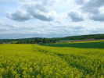
Vendredi, il fait beau, départ à 11 h pour Trouville ! Petit arrêt (de 2 h quand même...) pour pique-niquer tranquillement au bord d'un champ de colza en fleur, dans un petit chemin (pas boueux, bien sûr !)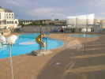
A Trouville, je retrouve plein de connaissances. Jean-François Lorente a tout organisé, tout prévu ! Ce soir nous dînons dans la salle supérieure arrière de la rotonde. Belle vue sur la piscine...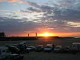
La salle est toute vitrée, et nous avons droit à un magnifique coucher de soleil sur la mer...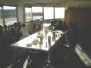
Chacun met ses provisions sur la table, après l'apéritif de l'organisation ! Pas de barbecue-Pirate, cette année, dommage, j'avais apporté des travers de porc. Bon, je les mets au frigo de la salle...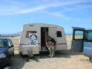
Jean-François a insisté dur, et nous avons encore le parking sur la plage, c'est extrêmement pratique, d'autant que les parkings voisins ne sont pas très vastes ! Admirez cette caravane un peu spéciale, à peu près carrée, avec un attelage déporté ! Bizarre, non ?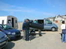
Samedi matin, petit vent faible, essais de ballon solaire, mais ça ne chauffe pas assez !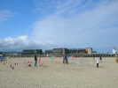
Les jardins du vent, eux, n'ont pas de problèmes ! Patricia et Bernard Ghesquière plantent le leur dans le sable...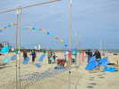
Annick et Patrick Guilbert ont déjà bien avancé le leur...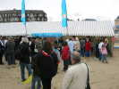
Ce matin, j'ai quand même fait voler mon Spiralier léger, mais j'étais à peu près seul en l'air ! Tant pis, ça ne freine pas l'apéritif officiel avec le Maire de Trouville et les discours, très courts, merci !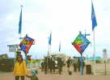
Ensuite, direction la salle du Casino, celle de la rotonde devenant trop petite pour le nombre de participants ! De belles enseignes ont été créées pour baliser l'entrée du festival...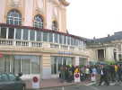
Bien sûr, avec ce vent, tout le monde est en avance, il faut bien attendre que le couvert soit mis dans la "Salle de la Plage" !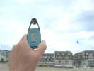
Retour sur la plage, le ventomètre n'est pas folichon, il faudra que je sorte du léger, mais tout le monde n'en a pas, pourtant, ce n'est pas la première fois...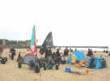
Du côté des charistes, ce n'est pas mieux, mais au moins, le camp s'est monté, autour de la tente et du drapeau Pirate de Yves...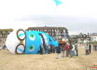
Jean-Paul le créateur, des Sens Ciel a apporté sa dernière oeuvre, Froggy et même une soufflerie pour la gonfler quand Eole s'y refuse ! Au moins, ça occupe le public un moment... Photo du groupe du Club devant le monstre...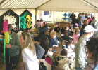
L'atelier, lui, tourne à plein régime, pour faire construire et décorer des coccinelles... Il y a même plusieurs tables, toutes occupées !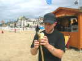
Toujours pas de vent, je change de sport, et je sors ma fusée qui monte même plus haut que d'habitude. Il est vrai qu'avec des fous comme Jerémy, il faut tout prévoir et prévenir ! Il va jusqu'à vouloir tirer à l'horizontale... Pour finir, il confiera même un passager pour le premier vol habité ! Mais ça ne marchera pas très bien, la fusée part de suite en travers et ne dépasse pas 10 m, au lieu de 30 ou 40 d'habitude...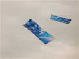
Le vent monte un peu, Audrey et Hugo sortent des cerfs-volants bien légers, à la toile signée Michel Gressier...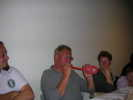
Passons sur l'après-midi peu volable, sauf par ma raie Manta ! au soir dîner, Jeff a prévu des ballons siffleurs et volants pour animer le débat ! Jean-Claude en regonfle un, pas facile !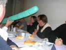
Un voisin de table en a fini un beau, paré pour le lancement !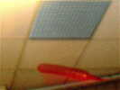
Celui-ci s'est stabilisé en sifflant près du plafond, je peux enfin en faire une photo malgré le peu de lumière !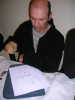
Jean-Paul se livre à son passe-temps habituel, la caricature. C'est Yves le Pirate la victime... J'ai bien regardé, Jean-Paul l'a mémorisé, il ne relèvera pas la tête avant que le dessin ne soit fini, pas un coup d'oeil même occasionnel vers Yves !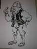
Et voilà le résultat, j'ai oublié de dire que les Pirates étaient en costume, ce soir...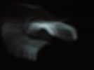
Ensuite, vol de nuit, un tout petit peu de vent par moments, mais de la flotte en continu... La dernière demi-heure, nous sommes... 3 : 2 pilotables, et moi avec le Spiralier, qui oscille en permanence mais reste en l'air... le plus souvent ! Je trouve quand même que certains cervolistes auraient pu se forcer un peu, ne serait-ce que pour honorer le contrat moral avec l'organisateur...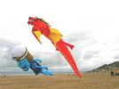
Dimanche matin, prévisions pessimistes, l'horizon est noir, mais pour le moment, ça va. Du vent, du soleil, Froggy et Bolzed sont en l'air grâce au savoir-faire de toute l'équipe...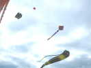
Il y a aussi d'autres gonflables, des trilobytes, des pieuvres, des raies !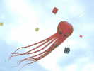
Sylvain a amené deux nouvelles grandes pieuvres...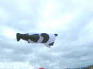
On voit aussi un nounours, noir et blanc, c'est peut-être à Jeff ?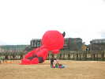
Et ce démoniau rouge qui a un peu de mal à décoller, mais les enfants apprécient !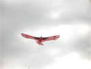
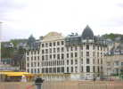
Pendant ce temps, le Trouville-Palace continue à trôner majestueusement face à la mer et les pieds sur la plage...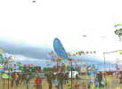
Côté jardins du vent, pas de problèmes, celui de Jean-Claude attire toujours autant de monde et de questions naïves !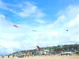
Et il y a du monde en l'air, dont la roue de Hugo et Audrey, tout là-haut !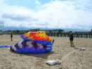
Après déjeuner, les gros ressortent ! Un peu de mal à se stabiliser au départ, mais une fois lancé, ça ira !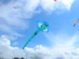
Mon Condor est reparti, avec un réglage un peu meilleur (il y a une plume qui veut absolument se retourner, et ça le fait pencher...). Les petites raies dodues que j'avais vues à Berck sont en fait de Philippe Lefebvre, vous savez, celui qui expose des cartes postales...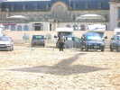
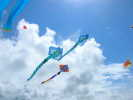
Bon, ça cohabite bien, les 2 raies de Philippe, la mère et la fille plus petite, et la grande raie classique de Pierre !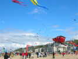
Jack le Cafard, de Sens, a volé tout l'après-midi, et un Mégateam est en cours sur le terrain clôturé !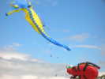
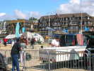
Ca se termine, la caravane pliante s'est invaginée dans sa caisse et ne freinera pas en route...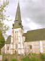
Je roule 50 km et je m'arrête comme d'hab dans un petit village, St-Etienne l'Allier, haut lieu de la Résistance (naissance du maquis Surcouf), à l'ombre sécurisante de l'église... St Etienne, XI et XIII siècles, dotée d'un immense clocher très élancé...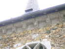